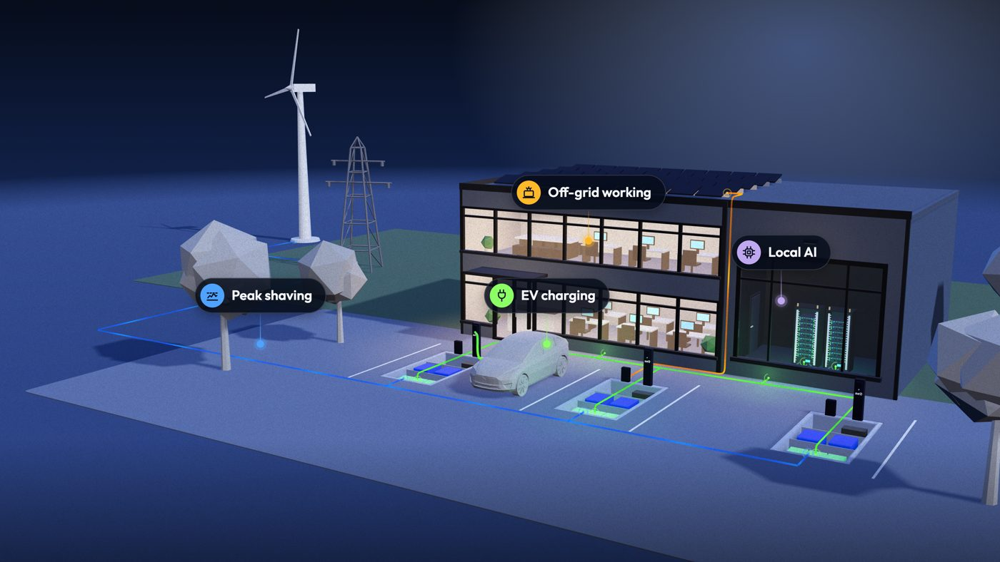

Sett Designer
Beelden van Sett, klaar voor gebruik.
Maak slides met de 3D-scènes van de site, laat Sett van alle kanten zien, of pak een kant-en-klare render, foto of video uit de bibliotheek.

3D · PNGSlides
Kies een 3D-scène, kadreer hem, zet er labels bij en download hem als PNG in 4K voor je presentatie.
Open de slides Interactief
InteractiefInteractieve Sett-box
Draai de Sett 96 rond, open hem en bekijk wat erin zit: de accu's, de omvormer en de laadpaal.
Open de box


 Renders · foto's · video
Renders · foto's · video
Assetbibliotheek
Alle kant-en-klare beelden van Sett: de renders, de kaartbeelden, foto's, video's en documenten, om te bekijken en te downloaden.
Open de bibliotheek